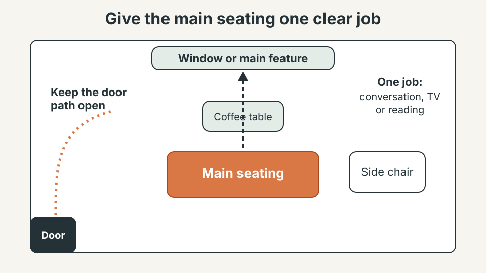

HOME DESIGN · SMALL SPACES
How to Make a Small Living Room Feel Bigger Without Buying New Furniture
A small living room does not automatically need smaller furniture. Often the real problem is too many visual stops: a blocked walkway, seating that faces the wrong way, dark corners and items left in sight. Change the arrangement before you buy anything.

1. Start with the walking path, not the furniture catalog
The fastest way to make a room feel cramped is to make people weave around furniture. Walk through the room as you normally do and notice where you hesitate, turn sideways or step around something. That route matters more than a perfect furniture diagram, because it is how the room is actually used. Move one object out of the route and live with the change for an evening before deciding.
| What you notice | Try first |
|---|---|
| A sideways turn around a table, lamp or chair | Clear the main walking route (section 1) |
| Chairs facing different directions | Give the main seating one job (section 2) |
| The room feels crowded | Remove one piece for a few days (section 3) |
| A busy coffee table | Keep it to one or two items (section 4) |
| Dark corners | Free the window, light the shadows (section 6) |
| Many small objects in sight | Give each category a nearby home (section 10) |
2. Give the main seating one clear job
Decide what the room is mainly for (conversation, television, reading, looking outside) and point the main seating toward that purpose instead of letting every chair face a different direction. If the sofa faces the television while the best window is behind it and a chair blocks the entrance, the room feels fragmented even though nothing is too large. You do not have to push the sofa flat against a wall: a little breathing room behind it can create a better path and make the seating area feel intentional.

3. Remove one piece before buying a smaller replacement
Buying compact furniture can make the problem worse: three small tables can take more visual and walking space than one useful table. Remove one piece for a few days first, starting with an occasional chair, side table, basket or decorative item that is rarely used. If the room works better immediately, you have saved space without spending money. Keep the things that earn their floor space.
4. Keep the center visually quieter
A coffee table covered with books, remotes, chargers, candles and decorations makes a room feel busy even when the floor is clear. Keep the table to one or two intentional items, give everyday objects a nearby home, and avoid collecting baskets, stools and plants around the seating area just because each looks good alone. The aim is not minimalism for its own sake; it is to make the important shapes easy to read.
5. Use the walls to create height, not more clutter
Small rooms often have unused vertical space while the floor is overloaded. A tall bookcase, high curtain placement or well-placed artwork draws the eye upward. Vertical storage only helps if it reduces floor clutter: use closed storage for visually noisy items and leave breathing room around what you display. For wall art, one appropriately sized piece looks calmer than many tiny frames. If you are hanging large art, our guide on how to hang large wall art without damaging your walls covers the practical side of doing it safely.
Safety first. Anchor tall bookcases and shelving units to the wall, and get a second person to help move or hang heavy pieces.
6. Let more natural light reach the room
Dark corners hide the edges of a room. Start with the window rather than brighter lamps: move tall furniture that blocks daylight, keep the sill relatively clear and use window treatments that open fully during the day. Where privacy needs curtains, let them sit outside the glass when open. At night, light the areas that would otherwise disappear into shadow instead of relying on one bright ceiling source. Our guide to better evening home lighting explains how to do this without turning the room into a collection of gadgets.
7. Use a mirror only where it reflects something useful
A mirror can add depth, but a large mirror on a small wall is not a guaranteed fix. Stand where it will hang and ask what it will reflect. A window, open doorway or attractive part of the room helps; a cluttered shelf or the television makes the room busier. Think of the mirror as a borrowed window.
Safety first. Mirrors are heavy and fragile. Fix them into a stud or with anchors rated well above their weight, and never hang one over a spot where it could fall onto a seat or bed.

8. Choose one visual focal point
A room feels larger when the eye knows where to land. Choose one main feature (a window, artwork, fireplace, television wall or lamp arrangement) and reduce competition around it. The room need not be plain, but the strongest element should be obvious: if every wall has a gallery, every surface has accessories and every corner has a plant, the eye has nowhere to rest. Try removing three small decorative objects instead of adding one large statement piece.
9. Match furniture scale instead of chasing “small” furniture
Small furniture is not automatically space-saving. A tiny sofa with several small chairs and tables can occupy more visual territory than one properly scaled sofa and one useful table. Look at proportions together: a rug that is too small disconnects the seating, a tiny coffee table invites extra surfaces, and undersized storage sends overflow to the floor. Choose fewer pieces that do their jobs well, and before replacing anything, measure the footprint and test the size with painter's tape on the floor.
10. Hide the small things that create the biggest visual noise
Chargers, remotes, cables and papers take little physical space, but repeated small objects break up large visual surfaces. Give each category a home within one or two steps of where it is used (a tray for remotes, a cable route behind a desk, a drawer for chargers) rather than a general “tidy later” basket. If cables are part of the problem, our serviceable cable-clutter system focuses on keeping cables organized without making future repairs difficult.
11. Test the layout before spending money
Most useful experiments here are reversible: move a chair, remove a table, change a lamp position. Take a photo from the doorway first, then make one change at a time and photograph again from the same spot, because photos reveal blocked sightlines and visual clutter you miss from inside the room. After three or four changes, stop. If the room is easier to enter and use, do not add furniture just because an empty corner now exists.
12. A simple 30-minute reset
If you want to test the approach today, do this in order:
- Photograph the room from the main entrance.
- Clear the primary walking route.
- Remove one rarely used piece of furniture.
- Turn the main seating toward the room's strongest feature.
- Clear the coffee table and nearby floor.
- Move anything blocking useful natural light.
- Improve one dark corner with an existing lamp.
- Group small everyday items into one nearby storage point.
- Take the same photo again.
- Live with the arrangement for two evenings before buying anything.
The last step matters most. Keep the changes that make the room easier to use, not merely easier to photograph.
Common mistakes in a small living room
- Replacing one large piece with several small ones, which can take up more space.
- Hanging a large mirror without checking what it will reflect.
- Covering the coffee table with remotes, chargers and decorative objects.
- Letting tall furniture or a crowded sill block daylight from the window.
- Leaving several objects competing for attention around the main focal point.
- Buying new furniture before testing the layout with reversible changes.
Frequently asked questions
How can I make a small living room look bigger?
Start with furniture placement, clear walking paths, lighter visual weight, better lighting and fewer objects competing for attention. You can often create a noticeable improvement without replacing the main furniture.
Does pushing furniture against the wall make a room look bigger?
Not always. A sofa can sometimes work better slightly away from the wall if that creates a clearer conversation area and a more useful circulation path.
Do mirrors really make a small room look larger?
A well-placed mirror can increase the sense of depth by reflecting light or a useful view. It works best when the reflected scene is tidy and intentional.
What should I remove from a small living room first?
Start with objects that block walkways, duplicate another function, or are rarely used. Test removing one piece at a time so you can tell which change actually helps.
Should a small living room have small furniture?
Not necessarily. A few correctly scaled pieces can look calmer than many undersized pieces packed into the same footprint.
Can lighting make a small living room feel bigger?
Yes. Lighting darker corners and using more than one light level can make the room feel deeper and easier to navigate, especially after sunset.
The goal is not to make the room look empty
A successful small living room still feels like a home. You should have somewhere comfortable to sit, somewhere to put a drink, useful lighting, storage for everyday items and enough open space to move naturally.
The trick is to make those functions work together instead of competing for the same few square feet. Change the route first, remove what you do not use, improve the strongest sightline and only then consider buying something new. In many cases, the room you already own has more usable space than its current layout allows you to see.